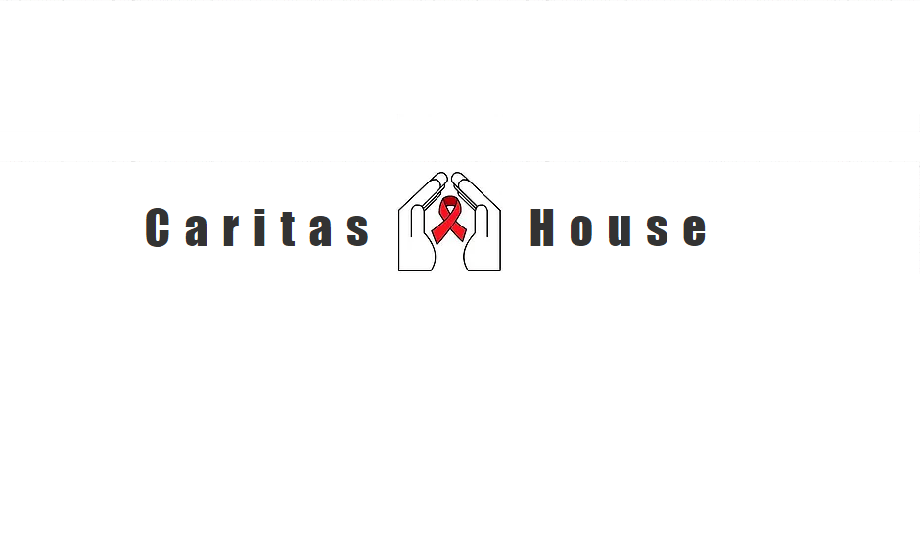

Caritas House

Caritas House began as an outreach to those living with HIV/AIDS but has grown to offer support services to people who are chronically homeless with disabilities. They serve a 22 county area in Northern WV
What Do They Need Most?
Supplies
- Clothing
- Bedding
- Appliances & Furniture
- Food (Canned or Non-Perishable preferred)
- Other Stuff: Clerical Supplies, Bus Passes, Padlocks, etc.
- Monetary Donations
Volunteers
- Caritas House More specifically Manages its volunteers:
- Volunteer by contacting
- Monday - Friday
- 8:30AM - 4:30PM
- (304) 985-0021
- jsiko@caritashouse.net